28 Inverse Probability Weighting
Summary
$$ \newcommand{X}{} \newcommand{Y}{}
$$
- Today, we’re going to talk about inverse probability weighting.
- This is a simple technique for getting unbiased estimates …
- of targets like adjusted differences in means…
- even when your model is badly misspecified.
- You can use it even when it’s impossible to avoid bias using the ‘all functions’ model.
- e.g., when you have empty columns. This often happens when you have a small sample.
- Or when you have many columns, i.e. many covariates to adjust for or one with many levels.
- The essential idea is to fit the data where it’s used in your comparison, not where most of the data is.
A Simplification

- To keep things simple, we’ll start by thinking about the population least squares predictor.
\[ \begin{aligned} \tilde\mu &\overset{\texttip{\small{\unicode{x2753}}}{it minimizes the average of the squared errors we make on the population}}{=} \mathop{\mathrm{argmin}}_{m \in \mathcal{M}} \frac{1}{m}\sum_{j=1}^m \qty{ y_j - m(w_j,x_j) }^2 \\ &\overset{\texttip{\small{\unicode{x2753}}}{this average can be rewritten as the expected squared error for $(W_i,X_i,Y_i)$ drawn uniformly-at-random from the population}}{=} \mathop{\mathrm{argmin}}_{m \in \mathcal{M}} \mathop{\mathrm{E}}\qty[ \qty{ Y_i - m(W_i,X_i) }^2 ] \\ \end{aligned} \]
- We saw in Lecture 12 that \(\tilde\mu(w,x)\) is the expected value of the (sample) least squares predictor
when \((W_i,X_i,Y_i)\) are drawn uniformly-at-random from the population.
\[ \tilde\mu(w,x) = \mathop{\mathrm{E}}[ \hat\mu(w,x) ] \qfor \hat\mu = \mathop{\mathrm{argmin}}_{m \in \mathcal{M}} \frac{1}{n}\sum_{i=1}^n \qty{ Y_i - m(W_i,X_i) }^2. \]
- So if we’re estimating a target like \(\Delta_0\), the error we get using \(\tilde\mu\) is the bias we get using \(\hat\mu\). \[ \mathop{\mathrm{E}}[\hat\Delta_0] - \Delta_0 = \tilde\Delta_0 - \Delta_0 \]
Least Squares and ‘Noise’: A Warm-up Exercise

- When we’re doing this, it’ll be helpful to know something about the population least squares predictor \(\tilde\mu(w,x)\).
- It depends only on the column means \(\mu(w,x)\).
- The rest—how our observations vary around them—doesn’t matter.
\[ \begin{aligned} \tilde\mu &= \mathop{\mathrm{argmin}}_{m \in \mathcal{M}} \sum_{j=1}^n \left\{ y_j - m(w_j,x_j) \right\}^2 \\ &= \mathop{\mathrm{argmin}}_{m \in \mathcal{M}} \sum_{j=1}^n \left\{ \mu(w_j,x_j) - m(w_j,x_j) \right\}^2. \end{aligned} \]
- That’s why, in Machine Learning tradition, we call \(\mu(w,x)\) the signal and everything else the noise. \[ y_j = \underset{\text{signal}}{\mu(w_j, x_j)} + \underset{\text{noise}}{\varepsilon_j} \qfor \mu(w,x)=\frac{1}{m_{w,x}}\sum_{j:w_j=w, x_j=x} y_j \]
- When we talk about a random variable \((W_i,X_i,Y_i)\) drawn uniformly-at-random from the population, we can phrase this in terms of conditioning.
\[ Y_i = \mu(W_i,X_i) + \varepsilon_i \qqtext{ where } \mathop{\mathrm{E}}[\varepsilon_i \mid W_i, X_i] = 0. \]
- \(\mu\) here is the same function.
- \(\varepsilon_i\) is drawn uniformly-at-random from the set of deviations from the column mean in the population. \[ \varepsilon_i \text{ is drawn uniformly-at-random from } \{ \varepsilon_j \ : \ w_j = W_i, x_j = X_i \}. \]
- Let’s look at what \(\tilde\mu\) minimizes in random variable terms. \[ \begin{aligned} \text{MSE}(m) &= \mathop{\mathrm{E}}\qty[ \qty{ Y_i - m(W_i,X_i) }^2 ] \\ &= \mathop{\mathrm{E}}\qty[ \qty{ \varepsilon_i + \mu(W_i,X_i) - m(W_i,X_i) }^2 ] \\ &= \mathop{\mathrm{E}}\qty[ \qty{ \varepsilon_i + \qty{\mu(W_i,X_i) - m(W_i,X_i)}}^2 ] \\ &= \mathop{\mathrm{E}}\qty[ \varepsilon_i^2 + 2 \varepsilon_i \qty{\mu(W_i,X_i) - m(W_i,X_i)} + \qty{\mu(W_i,X_i) - m(W_i,X_i)}^2 ] \\ &= \mathop{\mathrm{E}}[\varepsilon_i^2] + 0 + \mathop{\mathrm{E}}[\qty{\mu(W_i,X_i) + m(W_i,X_i)}^2 ] \end{aligned} \]
- The difference between the version with \(Y\) and the version with \(\mu\) is a constant.
- It doesn’t depend on \(m\). So it doesn’t influence which \(m\) minimizes the (population) mean squared prediction error \(\text{MSE}(m)\).
The Idea
Intuition and Empirical Evidence.
Least Squares and Covariate Shift

\[ \color{gray} \begin{aligned} \Delta_{\text{raw}} &= \textcolor[RGB]{0,191,196}{\frac{1}{m_1}\sum_{j:w_j=1} y_j} - \textcolor[RGB]{248,118,109}{\frac{1}{m_0}\sum_{j:w_j=0} y_j} &&\overset{\texttip{\small{\unicode{x2753}}}{translated into histogram form}}{=} \quad \sum_{x} \textcolor[RGB]{0,191,196}{p_{x \mid 1} \ \mu(1,x)} - \sum_{x} \textcolor[RGB]{248,118,109}{p_{x \mid 0} \ \mu(0,x)} \\ \tilde\Delta_{0} &= \textcolor[RGB]{248,118,109}{\frac{1}{m_0}\sum_{j:w_j=0}} \color{gray}\left\{ \color{black} \textcolor[RGB]{0,191,196}{\tilde \mu(1,x)} - \textcolor[RGB]{248,118,109}{\tilde\mu(0,x) } \color{gray} \right\} \color{black} &&\overset{\texttip{\small{\unicode{x2753}}}{translated into histogram form}}{=} \quad \sum_x \textcolor[RGB]{248,118,109}{p_{x \mid 0}} \ \textcolor[RGB]{0,191,196}{\tilde \mu(1,x)} - \sum_x \textcolor[RGB]{248,118,109}{p_{x \mid 0}} \ \textcolor[RGB]{248,118,109}{\tilde\mu(0,x) }. \end{aligned} \]
How does the raw difference in means \(\Delta_{\text{raw}}\) compare to the adjusted difference \(\tilde\Delta_{0}\)
when our adjustment uses the least squares predictor in the all functions model?
See Section 32.1 for the answer.
How does the raw difference in means \(\Delta_{\text{raw}}\) compare to the adjusted difference \(\tilde\Delta_{0}\)
when our adjustment uses the least squares predictor in the horizontal lines model?
See Section 32.2 for the answer.
Why, in intuitive terms, is the constant \(\tilde\mu(1,x)\) not the right prediction to use in this comparison? Hint. Think about the extreme covariate shift case. Which green dots does fit well? Which does it not fit well? Why?
See Section 32.3 for the answer.
What we want \(\tilde\mu(1,x)\) to be good at (when we’re using it in \(\tilde\Delta_{0}\)) and what we’re asking it to be good at (when we’re doing least squares) are different things. When there’s a lot of covariate shift, they’re very different things.
A Very Simple Improvement
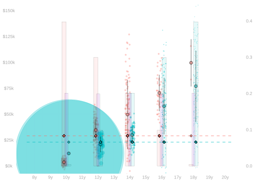
- Misspecification is a problem because of covariate shift. We’re fitting the wrong green dots.
- And we can’t really make the shift go away. In the moderate case above…
- At \(x=10\), we have 150 red dots and 50 green dots.
- At \(x=12\), we have 125 red dots and 75 green dots.
- At \(x=14\), we have 100 red dots and 100 green dots.
- But we can pretend that we see each green dot we do have multiple times. We pretend that …
- we see each one in the \(x=10\) column \(\textcolor[RGB]{248,118,109}{150} / \textcolor[RGB]{0,191,196}{50} = 3\) times.
- we see each one in the \(x=12\) column \(\textcolor[RGB]{248,118,109}{125} / \textcolor[RGB]{0,191,196}{75} \approx 1.67\) times.
- we see each one in the \(x=14\) column \(\textcolor[RGB]{248,118,109}{100} / \textcolor[RGB]{0,191,196}{100} = 1\) time.
- Or possibly a fewer times. Since that’s fewer times than 1, fewer means a fraction.
- We pretend that we see each one in the \(x=16\) column \(\textcolor[RGB]{248,118,109}{75} / \textcolor[RGB]{0,191,196}{125} \approx 0.6\) times.
- We pretend that we see each one in the \(x=18\) column \(\textcolor[RGB]{248,118,109}{50} / \textcolor[RGB]{0,191,196}{150} \approx 0.33\) times.
- Those are the ratios of red dots to green dots in those columns.
- In the plots above, we scale each dot by the number of times we pretend we see it.
- In particular, we scale each dot’s area.
- The total area of the red and green dots in each column is the same.
- When we have extreme shift, that means we get some really big green dots.
- That’s because we’re pretending that each observation is a lot of observations.
Let’s think about what the population least squares predictor \(\tilde\mu(w,x)\) looks like in histogram form. \[ \begin{aligned} \tilde\mu = \mathop{\mathrm{argmin}}_{m \in \mathcal{M}} \ \text{MSE}(m) \qfor \text{MSE}(m) &= \frac{1}{m}\sum_{wx}\sum_{j:w_j=w, x_j=x} \color{gray}\left\{ \color{black} \mu(w_j,x_j) - m(w_j,x_j) \color{gray} \right\} \color{black}^2 \\ &= \frac{1}{m}\sum_{wx}\sum_{j:w_j=w, x_j=x} \color{gray}\left\{ \color{black} \mu(w, x) - m(w,x) \color{gray} \right\} \color{black}^2 \\ &= \frac{1}{m}\sum_{wx} m_{wx} \color{gray}\left\{ \color{black} \mu(w, x) - m(w,x) \color{gray} \right\} \color{black}^2 \\ \end{aligned} \]
To pretend that we have the same number of green dots as red dots in each column …
- we just replace the number of dots \(m_{wx}\) that are actually there …
- with the number of dots we want to pretend there are: \(m_{0x}\).
Equivalently, we weight each term by a factor of \(m_{0x}/m_{wx}\). We’ll call this weight \(\gamma(w,x)\). \[ \begin{aligned} \tilde\mu^{\text{IPW}} = \mathop{\mathrm{argmin}}_{m \in \mathcal{M}} \ \text{WMSE}(m) \qfor \text{WMSE}(m) &= \frac{1}{m}\sum_{wx} \textcolor[RGB]{248,118,109}{m_{0x}} \color{gray}\left\{ \color{black} \mu(w, x) - m(w,x) \color{gray} \right\} \color{black}^2 \\ &= \frac{1}{m}\sum_{wx} \gamma(w,x) m_{wx}\color{gray}\left\{ \color{black} \mu(w, x) - m(w,x) \color{gray} \right\} \color{black}^2 \\ \qfor &\gamma(w,x) = \frac{m_{0x}}{m_{wx}} = \begin{cases} 1 & \text{if } w=0 \\ \frac{\textcolor[RGB]{248,118,109}{m_{0x}}}{\textcolor[RGB]{0,191,196}{m_{1x}}} & \text{if } w=1 \end{cases} \end{aligned} \]
And if we want to think about this as a sum over the population …
we can just give each person in our sum the weight \(\gamma(w_j,x_j)\) for their column.
\[ \begin{aligned} \tilde\mu^{\text{IPW}} = \mathop{\mathrm{argmin}}_{m \in \mathcal{M}} \ \text{WMSE}(m) \qfor \text{WMSE}(m) &= \frac{1}{m}\sum_{j=1}^m \gamma(w_j,x_j) \color{gray}\left\{ \color{black} \mu(w_j, x_j) - m(w_j,x_j) \color{gray} \right\} \color{black}^2 \end{aligned} \]
A Very Simple Improvement: Flat vs. Mild
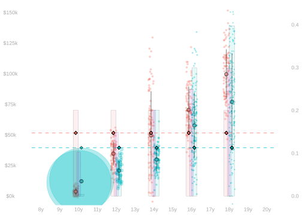
- Here’s a version of the same comparison when we …
- make the shift in \(p_{x \mid 1}\) more and more extreme
- but keep \(p_{x \mid 0}\) flat.
- Notice that the least squares predictor \(\tilde\mu\) doesn’t change at all.
- That’s because it’s doing what we asked it to do: minimize error over the red distribution.
- That’s not changing, so neither are our least squares predictors.
Using a Sample
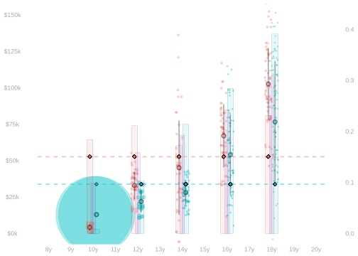
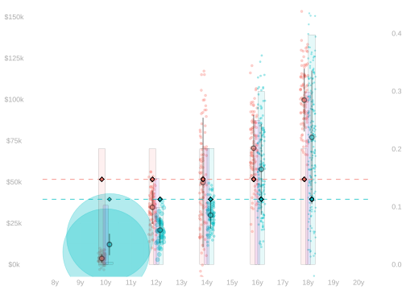
- In reality, we don’t have the population. We have (hopefully) a sample drawn uniformly-at-random from it.
- To make this work like a sample drawn from the population we’ve been pretending to have ….
- … we weight the people in our sample exactly the same way when we estimate \(\hat\mu\).
\[ \begin{aligned} \hat\Delta_0 &= \frac{1}{m_0} \sum_{j:w_j=0} \qty{ \hat\mu(1,x_j) - \hat\mu(0,x_j) } \\ & \qfor \hat\mu = \mathop{\mathrm{argmin}}_{m \in \mathcal{M}} \frac{1}{n}\sum_{i=1}^n \gamma(W_i,X_i) \color{gray}\left\{ \color{black} Y_i - m(W_i,X_i) \color{gray} \right\} \color{black}^2 \\ & \qand \gamma(w,x) = \frac{\textcolor[RGB]{248,118,109}{m_{0x}}}{m_{wx}} = \begin{cases} 1 & \text{if } w=0 \\ \frac{\textcolor[RGB]{248,118,109}{m_{0x}}}{\textcolor[RGB]{0,191,196}{m_{1x}}} & \text{if } w=1 \end{cases} \end{aligned} \]
pop.summaries = pop |> group_by(w,x) |> summarize(mwx=n(), .groups='drop')
mwx = summary.lookup('mwx', pop.summaries)
gamma = function(w,x) mwx(0,x) / mwx(1,x)
sam$weights = gamma(sam$w, sam$x)
fitted.model = lm(y~1+w, weights=weights, data=sam)
muhat = function(w,x) predict(fitted.model, newdata=data.frame(w=w,x=x))
Delta0.hat = mean(muhat(1,pop$x) - muhat(0,pop$x))
Delta0.hat - 1
-
Here we’re calculating \(m_{wx}\) as a function of \(w\) and \(x\). This uses the tidyverse functions
group_byandsummarizeand the functionsummary.lookupfrom the Week 9 homework. - 2
-
This is the function we weight our observations using.
- 3
-
We fit our model using the R built-in function
lm, telling it to use the weights we’ve put in the columnsam$weights. - 4
- We use it in our formula for \(\Delta_0\) from Section 33.1.
[1] -10526.25- Note that the weights \(\gamma(w,x)\) we are based on knowledge of the population’s covariate distribution.
- Sometimes we have that information.
- E.g. when we survey registered voters, some information about every registered voter is public record.
- Sometimes we don’t, so we have to use an estimate \(\hat\gamma\) of these weights.
- E.g., we can use the corresponding ratios of red and green dots in the sample.
\[ \hat\gamma(w,x) = \frac{\textcolor[RGB]{248,118,109}{N_{0x}}}{N_{wx}} = \begin{cases} 1 & \text{if } w=0 \\ \frac{\textcolor[RGB]{248,118,109}{N_{0x}}}{\textcolor[RGB]{0,191,196}{N_{1x}}} & \text{if } w=1 \end{cases} \qfor N_{wx} = \sum_{i:W_i=w, X_i=x} 1 \]
sam.summaries = sam |> group_by(w,x) |> summarize(Nwx=n(), .groups='drop')
Nwx = summary.lookup('Nwx', sam.summaries)
gammahat = function(w,x) Nwx(0,x) / Nwx(1,x)
sam$weights = gammahat(sam$w, sam$x)
fitted.model = lm(y~1+w, weights=weights, data=sam)
muhat = function(w,x) predict(fitted.model, newdata=data.frame(w=w,x=x))
Delta0.hat = mean(muhat(1,sam$x) - muhat(0,sam$x))
Delta0.hat- 1
- Here we’re calculating \(N_{wx}\) as a function of \(w\) and \(x\). This is like we did for \(m_{wx}\) in the population case.
- 2
- We’re calculating the weights using \(N_{wx}\) instead of \(m_{wx}\) now.
- 3
-
We fit our model using the R built-in function
lm, telling it to use the weights we’ve put in the columnsam$weights. - 4
- We use it in our formula for \(\Delta_0\) from Section 33.2.
[1] -11989.62This Works Perfectly

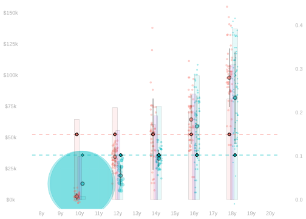
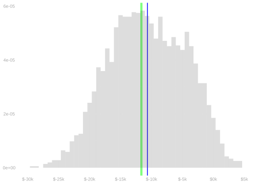
- When we weight based on the population covariate distribution, we get an unbiased estimator.1
\[ \mathop{\mathrm{E}}[\hat\Delta_0] = \Delta_0 \qfor \Delta_0 = \frac{1}{m_0} \sum_{j:w_j=0} \qty{ \mu(1,x_j) - \mu(0,x_j) } \]
Or Almost Perfectly.


- We actually do better when we weight using the sample covariate distribution.2
- It has lower variance than the population-based version.
- Especially when there’s a lot of covariate shift.
- This is pretty interesting, but we won’t have time to get into it.
Generalizing the Idea
An Exercise.
\(\Delta_0\)
How should we weight to estimate \(\Delta_0\)?3
\(\Delta_1\)
How should we weight to estimate \(\Delta_1\)?4
\(\Delta_{\text{all}}\)
How should we weight to estimate \(\Delta_{\text{all}}\)?5
Proving Unbiasedness
Goal
Suppose we have this inverse probability weighted population least squares predictor \(\tilde\mu\). \[ \begin{aligned} \tilde\mu= \mathop{\mathrm{argmin}}_{m \in \mathcal{M}} \ \text{WMSE}(m) \qfor \text{WMSE}(m) &= \sum_{wx} \gamma(w,x) m_{wx} \color{gray}\left\{ \color{black} \mu(w, x) - m(w,x) \color{gray} \right\} \color{black}^2 \\ \qand &\gamma(w,x) = \frac{\textcolor[RGB]{248,118,109}{m_{0x}}}{m_{wx}}. \end{aligned} \]
We want to show that when we plug it in to our formula for \(\tilde\Delta_0\), we get our estimation target \(\Delta_0\). \[ \begin{aligned} \tilde\Delta_0 &= \frac{1}{m_0} \sum_{j:w_j=0} \qty{ \tilde\mu(1,x_j) - \tilde\mu(0,x_j) } && \text{ the population version of our estimator} \\ \Delta_0 &= \frac{1}{m_0} \sum_{j:w_j=0} \qty{ \mu(1,x_j) - \mu(0,x_j) } && \text{ our target} \end{aligned} \]
Approach
- We’ll start by writing out \(\tilde\Delta_0\) and \(\Delta_0\) as the sum of a matched term and a mismatched term.
\[ \begin{aligned} \tilde\Delta_0 &= \textcolor[RGB]{248,118,109}{\frac{1}{m_0} \sum_{j:w_j=0}} \textcolor[RGB]{0,191,196}{\tilde\mu(1,x_j)} - \textcolor[RGB]{248,118,109}{\frac{1}{m_0} \sum_{j:w_j=0}} \textcolor[RGB]{248,118,109}{\tilde\mu(0,x_j)} \\ \Delta_0 &= \textcolor[RGB]{248,118,109}{\frac{1}{m_0} \sum_{j:w_j=0}} \textcolor[RGB]{0,191,196}{\mu(1,x_j)} - \textcolor[RGB]{248,118,109}{\frac{1}{m_0} \sum_{j:w_j=0}} \textcolor[RGB]{248,118,109}{\mu(0,x_j)} \end{aligned} \]
- And then write the difference between them as the sum of matched and mismatched terms.
\[ \Delta_0-\tilde\Delta_0 = \textcolor[RGB]{248,118,109}{\frac{1}{m_0} \sum_{j:w_j=0}} \color{gray}\left\{ \color{black} \textcolor[RGB]{0,191,196}{\mu(1,x_j) - \tilde\mu(1,x_j)} \color{gray} \right\} \color{black} - \textcolor[RGB]{248,118,109}{\frac{1}{m_0} \sum_{j:w_j=0}}\color{gray}\left\{ \color{black} \textcolor[RGB]{248,118,109}{\mu(0,x_j)} - \textcolor[RGB]{248,118,109}{\tilde\mu(0,x_j)} \color{gray} \right\} \color{black}. \]
- We’ll work out an orthogonality condition characterizing the errors \(\mu(w,x)-\tilde\mu(w,x)\).
- And then use it to show that both the matched and mismatched error terms are zero.
The Orthogonality Condition
\[ \begin{aligned} 0 &\overset{\texttip{\small{\unicode{x2753}}}{histogram form}}{=} \sum_{wx} \textcolor[RGB]{248,118,109}{m_{0x}} \color{gray}\left\{ \color{black} \mu(w, x) - \tilde\mu(w,x) \color{gray} \right\} \color{black} m(w,x) \\ &\overset{\texttip{\small{\unicode{x2753}}}{summing over $x$, then $w$}}{=} \sum_{w \in 0,1} \sum_x \textcolor[RGB]{248,118,109}{m_{0x}} \color{gray}\left\{ \color{black} \mu(w, x) - \tilde\mu(w,x) \color{gray} \right\} \color{black} m(w,x) \\ &\overset{\texttip{\small{\unicode{x2753}}}{rewriting the histogram-form sum over $x$ as a sum over the population}}{=} \sum_{w \in 0,1} \sum_{j:w_j=0} \color{gray}\left\{ \color{black} \mu(w, x_j) - \tilde\mu(w,x_j) \color{gray} \right\} \color{black} m(w,x_j) \qqtext{ for all } m \in \mathcal{M}. \end{aligned} \tag{31.1}\]
Derivation
- We’ll do the derivation in histogram form.
- The key idea is optimality along paths (see here in Lecture 12). Let’s review that.
- Because \(\tilde \mu\) minimizes weighted mean squared error over all \(m \in \mathcal{M}\) …
- it minimizes the weighted mean squared error along all paths \(\{m_t = \tilde\mu + tm : t \in \mathbb{R}\}\) for \(m \in \mathcal{M}\)
- because every function \(m_t\) on this path is in the model \(\mathcal{M}\).
- It follows that \(\text{WMSE}(\tilde\mu + tm)\) is minimized at \(t=0\) for every \(m \in \mathcal{M}\).
- So the derivative with respect to \(t\) is zero at \(t=0\).
\[ \begin{aligned} 0 &= \frac{d}{dt}\mid_{t=0} \text{WMSE}(\tilde \mu + t m) \\ &\overset{\texttip{\small{\unicode{x2753}}}{plugging in the definition of WMSE and distributing the derivative over terms in the sum}}{=} \sum_{wx} \gamma(w,x) m_{wx} \times \frac{d}{dt}\mid_{t=0} \color{gray}\left\{ \color{black} \mu(w, x) - \color[RGB]{239,71,111}\left\{ \color{black} \tilde\mu(w,x) + t m(w,x) \color[RGB]{239,71,111} \right\} \color{black} \color{gray} \right\} \color{black}^2 \\ &\overset{\texttip{\small{\unicode{x2753}}}{via the chain rule}}{=} \sum_{wx} \gamma(w,x) m_{wx} \times 2 \ \color{gray}\left\{ \color{black} \mu(w, x) - \tilde\mu(w,x) \color{gray} \right\} \color{black} \ \frac{d}{dt}\mid_{t=0} \color{gray}\left\{ \color{black} \mu(w, x) - \color[RGB]{239,71,111}\left\{ \color{black} \tilde\mu(w,x) + t m(w,x) \color[RGB]{239,71,111} \right\} \color{black} \color{gray} \right\} \color{black} \\ &\overset{\texttip{\small{\unicode{x2753}}}{differentiating the last factor}}{=} \sum_{wx} \gamma(w,x) m_{wx} \times 2 \ \color{gray}\left\{ \color{black} \mu(w, x) - \tilde\mu(w,x) \color{gray} \right\} \color{black} \times -m(w,x) \\ &\overset{\texttip{\small{\unicode{x2753}}}{pulling constants out of the sum}}{=} -2 \sum_{wx} \gamma(w,x) m_{wx} \color{gray}\left\{ \color{black} \mu(w, x) - \tilde\mu(w,x) \color{gray} \right\} \color{black} \ m(w,x) \\ &\overset{\texttip{\small{\unicode{x2753}}}{observing that $\gamma(w,x)m_{wx} = \textcolor[RGB]{248,118,109}{m_{0x}}$. That's why we chose $\gamma$ as we did.}}{=} -2 \sum_{wx} \textcolor[RGB]{248,118,109}{m_{0x}} \color{gray}\left\{ \color{black} \mu(w, x) - \tilde\mu(w,x) \color{gray} \right\} \color{black} m(w,x). \end{aligned} \]
Showing Error Terms are Zero
We’ll plug in group indicators \(m(w,x)=1_{=0}(w)\) and \(m(w,x)=1_{=x}(x)\) to this orthogonality condition \[ \begin{aligned} 0 &= \sum_{w \in 0,1} \sum_{j:w_j=0} \color{gray}\left\{ \color{black} \mu(w, x_j) - \tilde\mu(w,x_j) \color{gray} \right\} \color{black} m(w,x_j) \qqtext{ for all } m \in \mathcal{M}. \end{aligned} \]
To show that the matched and mismatched error terms in this error decomposition are zero.
\[ \Delta_0-\tilde\Delta_0 = \textcolor[RGB]{248,118,109}{\frac{1}{m_0} \sum_{j:w_j=0}} \color{gray}\left\{ \color{black} \textcolor[RGB]{0,191,196}{\mu(1,x_j) - \tilde\mu(1,x_j)} \color{gray} \right\} \color{black} - \textcolor[RGB]{248,118,109}{\frac{1}{m_0} \sum_{j:w_j=0}}\color{gray}\left\{ \color{black} \textcolor[RGB]{248,118,109}{\mu(0,x_j)} - \textcolor[RGB]{248,118,109}{\tilde\mu(0,x_j)} \color{gray} \right\} \color{black}. \]
- Because of our weighting, the case of the mismatched term is exactly like the case of the matched term.
The Matched Term \[ \begin{aligned} 0 &= \sum_{w \in 0,1} \sum_{j:w_j=0} \color{gray}\left\{ \color{black} \mu(w, x_j) - \tilde\mu(w,x_j) \color{gray} \right\} \color{black} \textcolor[RGB]{248,118,109}{1_{=0}(w)} \\ &\overset{\texttip{\small{\unicode{x2753}}}{This is a version of the 'indicator trick'. We drop terms where $w=1$ from our sum because $1_{=0}(1)=0$.}}{=} \textcolor[RGB]{248,118,109}{\frac{1}{m_0} \sum_{j:w_j=0}} \color{gray}\left\{ \color{black} \textcolor[RGB]{248,118,109}{\mu(0, x_j)} - \textcolor[RGB]{248,118,109}{\tilde\mu(0,x_j)} \color{gray} \right\} \color{black} \end{aligned} \]
The Mismatched Term \[ \begin{aligned} 0 &= \sum_{w \in 0,1} \sum_{j:w_j=0} \color{gray}\left\{ \color{black} \mu(w, x_j) - \tilde\mu(w,x_j) \color{gray} \right\} \color{black} \textcolor[RGB]{0,191,196}{1_{=1}(w)} \\ &\overset{\texttip{\small{\unicode{x2753}}}{Via the indicator trick, as in the matched term.}}{=} \textcolor[RGB]{248,118,109}{\frac{1}{m_0} \sum_{j:w_j=0}} \color{gray}\left\{ \color{black} \textcolor[RGB]{0,191,196}{\mu(1, x_j)} - \textcolor[RGB]{0,191,196}{\tilde\mu(1,x_j)} \color{gray} \right\} \color{black} \end{aligned} \]
A Follow-Up Question
- We’ve shown unbiasedness when we use the horizontal lines model (Equation 34.1).
- That’s what we’ve been visualizing.
- And our proof relies on it to some extent.
- Do we get an unbiased estimator with these other models?
- The parallel lines model (Equation 34.2).
- The lines model (Equation 34.3).
- The additive model (Equation 34.4).
It Does Work for Other Models
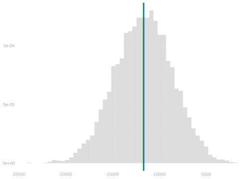
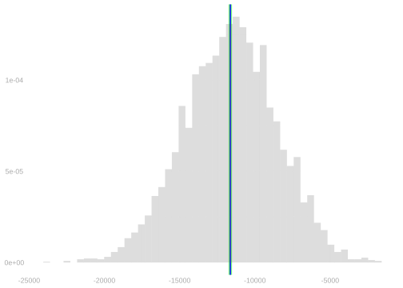
- All of these models include indicators for each group.
- When we weight like this, that’s all we need to get unbiasedness for the target \(\Delta_0\).
- For other targets, we need other weights.6
Why IPW?

- On the left, we see the weighted least squares predictor and the sampling distribution of \(\hat\Delta_0\) when we use it.
- For all of our models—the ones shown in tabs above—this is unbiased.
- We’ve proven that and seen it a moment ago.
- On the right, we see the unweighted least squares predictor and the sampling distribution of \(\hat\Delta_0\) when we use it.
- The bias we get here depends on the model.
- Usually there is some, but there isn’t always any with the lines model.
- This is the case we looked at in the exercise at the end on Lab 7.
- Sometimes something close to this happens, but it’s fragile. You have to get lucky. See Section 32.4.
- It happens because the covariate distributions in our two groups have a very special relationship.
- The ratio of the covariate distributions is a line: \(\textcolor[RGB]{248,118,109}{p_{0 \mid x}} / \textcolor[RGB]{0,191,196}{p_{1 \mid x}} = a+bx\).
- \(\textcolor[RGB]{248,118,109}{p_{0 \mid x}}\) is a line and \(\textcolor[RGB]{0,191,196}{p_{0 \mid x}}\) is flat.
- When we change the covariate distribution, we get bias again. If we don’t weight, we get bias.
- Below, noth \(\textcolor[RGB]{248,118,109}{p_{0 \mid x}}\) and \(\textcolor[RGB]{0,191,196}{p_{1 \mid x}}\) are (non-horizontal) lines Their ratio is not a line.
- Inverse probability weighting is great idea. You should do it.
- It’s easy. It’s basically a one-line change to your R code.
- It makes sense. You’re focusing on the data that’s relevant to your question (i.e. your target).
- People often don’t do it.
- They say it increases variance, so you’re less likely to get an answer other than ‘I don’t know’.
- And that you don’t have (much) bias anyway your model (almost) isn’t misspecified.
- And that misspecification usually doesn’t matter anyway because it averages out.
- They’ll point to something like this special lines example.
- I think that ‘it usually works out’ claims are missing the point of doing statistics at all.
- A confidence interval says that people can expect you to be right 95% of the time.
- What does it mean to ‘usually be right’ 95% of the time? Nothing. Your calibration is just gone.
- The point isn’t to get an answer other than ‘I don’t know’.
- It’s to get the answer ‘I don’t know’ when you don’t know.
Appendix: Answers
Q1 Answer
The raw difference is bigger. In comparison with the adjusted one, the average of \(\textcolor[RGB]{0,191,196}{\mu(1,x)}\) is taken over a covariate distribution that’s shifted to the right, where it’s bigger.
Q2 Answer
They’re the same. When we use the horizontal lines model, \(\tilde\mu(1,x)\) and \(\tilde\mu(0,x)\) are constant and equal to the within-group means. So in the first term in \(\tilde\Delta_{0}\), we’re taking the average of a constant—and that constant is the first term of \(\Delta_\text{raw}\). And the same happens for the second term.
Q3 Answer
It fits the green dots on the right well because that’s where most of the green dots are. But we’re averaging it over the distribution of the red dots, which are on the left.
Why the Lines Model ‘Gets Lucky’


- Our unweighted least squares predictor in the lines model gives us an unbiased estimate of \(\Delta_0\) when when the ratio of the covariate distributions is a line.7
\[ \textcolor[RGB]{192,192,192}{ \frac{m_0}{m_1} \times \frac{p_{x \mid 0}}{p_{x \mid 1}} = } \frac{\textcolor[RGB]{248,118,109}{m_{0x}}}{\textcolor[RGB]{0,191,196}{m_{1x}}} = a+bx \]
- Let’s see why by plugging a very special pair of lines into our orthogonality condition.
\[ \begin{aligned} 0 &= \sum_{j=1}^n \color{gray}\left\{ \color{black} \mu(w_j, x_j) - \tilde\mu(w_j,x_j) \color{gray} \right\} \color{black} m(w,x) \qqtext{ for any } && m \in \{ a(w)+b(w)x \} \\ &\qqtext{ and therefore for } && m(w,x) = \begin{cases} 0 & \text{if } w=0 \\ a+bx = \frac{\textcolor[RGB]{248,118,109}{m_{0x}}}{\textcolor[RGB]{0,191,196}{m_{1x}}} & \text{if } w=1 \end{cases}. \end{aligned} \]
Simplifying, using the indicator trick, we get…
\[ \begin{aligned} 0 &= \sum_{w\in 0,1} \sum_{j:w_j=1} \color{gray}\left\{ \color{black} \mu(w_j, x_j) - \tilde\mu(w_j,x_j) \color{gray} \right\} \color{black} \times \begin{cases} 0 & \text{if } w=0 \\ \frac{\textcolor[RGB]{248,118,109}{m_{0x}}}{\textcolor[RGB]{0,191,196}{m_{1x}}} & \text{if } w=1 \end{cases} \\ &= \sum_{j:w_j=1} \color{gray}\left\{ \color{black} \textcolor[RGB]{0,191,196}{\mu(1, x_j) - \tilde\mu(1,x_j)} \color{gray} \right\} \color{black} \frac{\textcolor[RGB]{248,118,109}{m_{0x}}}{\textcolor[RGB]{0,191,196}{m_{1x}}} \\ &= \sum_x \textcolor[RGB]{0,191,196}{m_{1x}} \color{gray}\left\{ \color{black} \textcolor[RGB]{0,191,196}{\mu(1, x) - \tilde\mu(1,x)} \color{gray} \right\} \color{black} \frac{\textcolor[RGB]{248,118,109}{m_{0x}}}{\textcolor[RGB]{0,191,196}{m_{1x}}} \\ &= \sum_x \textcolor[RGB]{248,118,109}{m_{0x}} \color{gray}\left\{ \color{black} \textcolor[RGB]{0,191,196}{\mu(1, x) - \tilde\mu(1,x)} \color{gray} \right\} \color{black}. \end{aligned} \]
- This says that the mismatched term in our decomposition of \(\Delta_0-\tilde\Delta_0\) is zero.
- Plugging in \(m(w,x)=1_{=0}(w)\) shows the matched term is zero.
- To show both terms are zero at once, we can plug in a signed version of the inverse probability weights \(\gamma(w,x)\).
\[ \gamma_{\pm}(w,x) = \begin{cases} 1 & \text{if } w=0 \\ -(a+bx)=-\frac{\textcolor[RGB]{248,118,109}{m_{0x}}}{\textcolor[RGB]{0,191,196}{m_{1x}}} & \text{if } w=1 \end{cases} \]
Lesson
- Unweighted least squares is unbiased if the (signed) inverse probability weights are in the model.
- This is interesting, but it’s a lot to expect.
- Unless you intentionally include \(\gamma_{\pm}\) in the model.
- That’s an option, but people usually weight instead.
Appendix: Two Versions of \(\hat\Delta\)
The version where we use the population covariate distribution
\[ \begin{aligned} \hat\Delta_0 &= \frac{1}{m_0} \sum_{j:w_j=0} \qty{ \hat\mu(1,x_j) - \hat\mu(0,x_j) } \\ & \qfor \hat\mu = \mathop{\mathrm{argmin}}_{m \in \mathcal{M}} \frac{1}{n}\sum_{i=1}^n \gamma(W_i,X_i) \color{gray}\left\{ \color{black} Y_i - m(W_i,X_i) \color{gray} \right\} \color{black}^2 \\ & \qand \gamma(w,x) = \frac{\textcolor[RGB]{248,118,109}{m_{0x}}}{m_{wx}} = \begin{cases} 1 & \text{if } w=0 \\ \frac{\textcolor[RGB]{248,118,109}{m_{0x}}}{\textcolor[RGB]{0,191,196}{m_{1x}}} & \text{if } w=1 \end{cases} \end{aligned} \]
The version where we use the sample covariate distribution
\[ \begin{aligned} \hat\Delta_0 &= \frac{1}{N_0} \sum_{i:W_i=0} \qty{ \hat\mu(1,X_i) - \hat\mu(0,X_i) } \\ & \qfor \hat\mu = \mathop{\mathrm{argmin}}_{m \in \mathcal{M}} \frac{1}{n}\sum_{i=1}^n \gamma(W_i,X_i) \color{gray}\left\{ \color{black} Y_i - m(W_i,X_i) \color{gray} \right\} \color{black}^2 \\ & \qand \gamma(w,x) = \frac{\textcolor[RGB]{248,118,109}{N_{0x}}}{N_{wx}} = \begin{cases} 1 & \text{if } w=0 \\ \frac{\textcolor[RGB]{248,118,109}{N_{0x}}}{\textcolor[RGB]{0,191,196}{N_{1x}}} & \text{if } w=1 \end{cases} \end{aligned} \]
Appendix: Models
The Horizontal Lines Model

\[ \mathcal{M}=\{m(w,x)=a(w) \qqtext{ for all functions } a\} \tag{34.1}\]
formula = y ~ wThe Parallel Lines Model
\[ \mathcal{M}=\{m(w,x)=a(w)+bx \qqtext{ for all functions } a \qqtext{and numbers} b\} \tag{34.2}\]
formula = y ~ w+xThe (Not-Necessarily-Parallel) Lines Model
\[ \mathcal{M}=\{m(w,x)=a(w)+b(w)x \qqtext{ for all functions } a,b\} \tag{34.3}\]
formula = y ~ w*xThe Additive Model
\[ \mathcal{M}=\{m(w,x)=a(w)+b(x) \qqtext{ for all functions } a,b\} \tag{34.4}\]
formula = y ~ w + factor(x)Here, for the sake of clarity, we’re talking about \(\hat\Delta_0\) defined in Section 33.1.↩︎
Here, for the sake of clarity, we’re talking about \(\hat\Delta_0\) defined in Section 33.2.↩︎
We just did this, but go ahead and copy it out here for reference.↩︎
Hint. For \(\Delta_0\), we wanted to make the distribution of the pretend (i.e. weighted) green dots like that of the red dots. Now the situation is reversed.↩︎
Hint. Now we’re averaging over the distribution of all dots. How do we duplicate the red dots to get that distribution? What about the green dots?↩︎
We talked about what these should be for \(\Delta_1\) and \(\Delta_{\text{all}}\) earlier (Chapter 30). If you got them right, you should be able to prove that you get unbiasedness for those targets when you use them. Prove it!↩︎
Up to a constant factor \(\textcolor[RGB]{248,118,109}{m_0}/\textcolor[RGB]{0,191,196}{m_1}\), the ratio \(\gamma(w,x)=\textcolor[RGB]{248,118,109}{p_{x \mid 0}}/\textcolor[RGB]{0,191,196}{p_{x \mid 1}}\) of the number of dots in each column agrees with the ratio of the proportions \(\textcolor[RGB]{248,118,109}{p_{x\mid 0}}/\textcolor[RGB]{0,191,196}{p_{x \mid 1}}\), so it’s equivalent to use either ratio in your weights. That equivalence is shown faintly, so as not to distract, below.↩︎